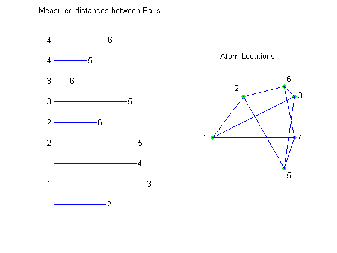
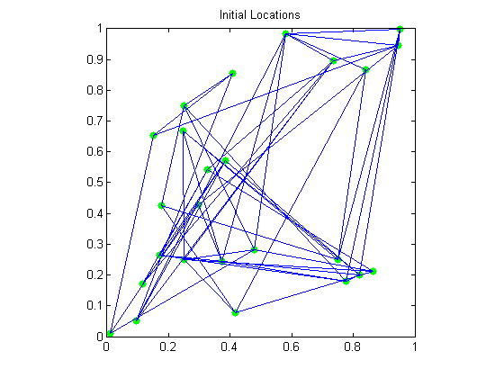
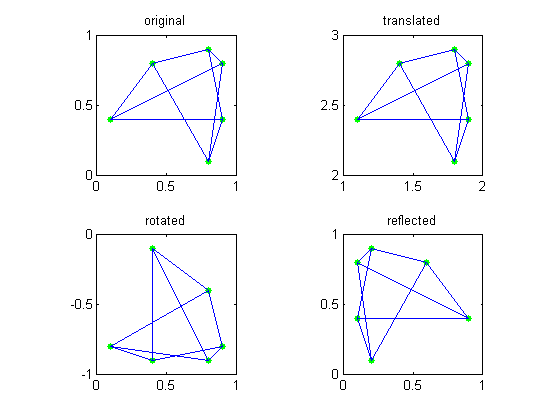
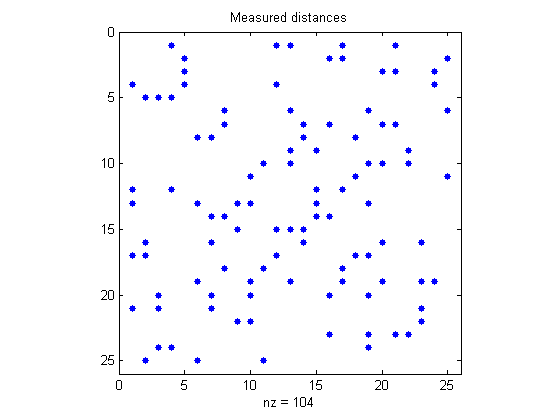
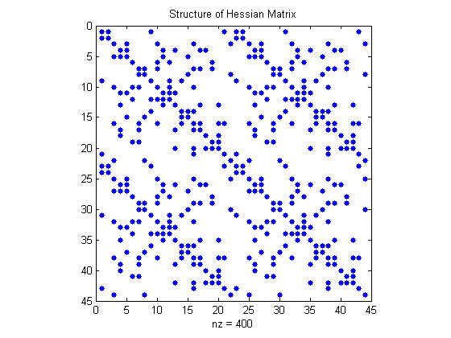
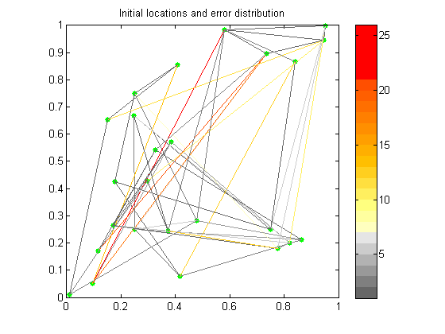
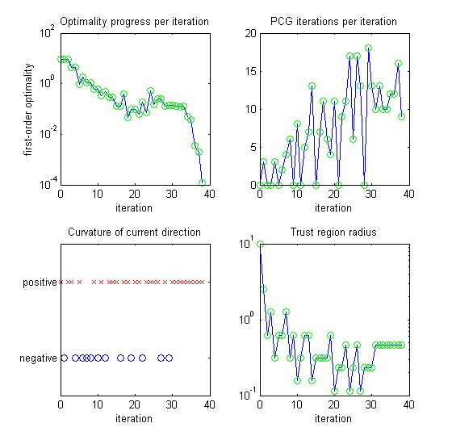
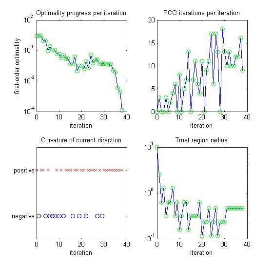
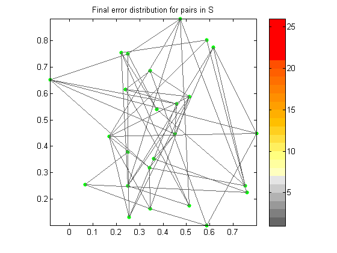
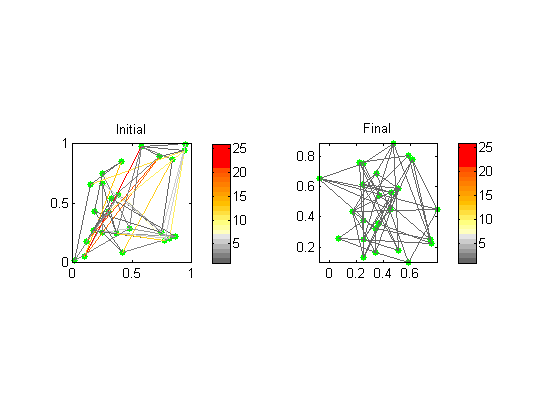

大規模な制約なし非線形最小化
このデモでは、Optimization Toolbox™ の大規模アルゴリズムを使用して 2 次元の分子構造問題を解きます。このタイプの問題は、人工衛星の測距や測量といった他のアプリケーションでも生じます。
分子構造問題:分子の N 個の原子を、指定された原子ペア間の距離が実験データと一致するように配置します。
簡単な例を以下に示します。左側がデータで、右側が解です。
load molecule; [smallI,smallJ,smalldist] = find(smallS); subplot(1,2,1); for i = 1:length(smalldist) line([0,smalldist(i)],[i i]); text(-0.07,i,sprintf('%d',smallJ(i))); text(smalldist(i)+.02,i,sprintf('%d',smallI(i))); end axis([-.1 1 0 10],'off'); title('Measured distances between Pairs'); subplot(1,2,2); plot(smallsoln(:,1),smallsoln(:,2),'g.','MarkerSize',15); for i = 1:length(smalldist), line([smallsoln(smallI(i),1) smallsoln(smallJ(i),1)], ... [smallsoln(smallI(i),2) smallsoln(smallJ(i),2)]); end textpos = smallsoln + [-.09 0;-.08 .08;.04 .01;.04 0;.03 -.07;.03 .07]; for i = 1:6 text(textpos(i,1),textpos(i,2),sprintf('%d',i)); end axis([-0.1 1 0 1.1],'off','square'); title('Atom Locations');
この問題に対する最適化アプローチでは、ランダムな構成 (上記) から始めて、最小誤差の構成が見つかるまで原子を移動させます。具体的には、原子の位置が以下のように与えられた場合
X = [x(1:N) y(1:N)]';
測定データ S にあるそれぞれの対 (i,j) の誤差を (norm(X(i,:)-X(j,:))^2 - S(i,j)^2)^2 とします。全誤差 MMOLE(X,S) は、S にあるすべての対の誤差の合計です。誤差関数 MMOLE が極小になる値を見つけます。
N = 25; [I,J,dist] = find(S); Xstart = [ [.25 .25]; [.25 .75]; [.75 .25]; reshape(xstart,N-3,2) ]; subplot(1,1,1); plot(Xstart(:,1),Xstart(:,2),'g.','Markersize',18); for k = 1:length(dist) line([Xstart(I(k),1) Xstart(J(k),1)],[Xstart(I(k),2) Xstart(J(k),2)]); end title('Initial Locations'); axis square;
距離は、剛体運動の下では不変です。平行移動、回転、および反射は、誤差関数 MMOLE に影響しません。
このような動きを避けるために、3 つの原子位置が既知であると仮定します。これらの位置は固定されているため、実際には 2N-6 個の不明な位置のみを扱うことになります。
% First illustration. subplot(2,2,1); plot(smallsoln(:,1),smallsoln(:,2),'g.','MarkerSize',15); for k = 1:length(smalldist) line([smallsoln(smallI(k),1) smallsoln(smallJ(k),1)], ... [smallsoln(smallI(k),2) smallsoln(smallJ(k),2)]); end axis([0 1 0 1],'square'); title('original'); % Second illustration. subplot(2,2,2); plot(1+smallsoln(:,1),2+smallsoln(:,2),'g.','MarkerSize',15); for k = 1:length(smalldist) line([1+smallsoln(smallI(k),1) 1+smallsoln(smallJ(k),1)], ... [2+smallsoln(smallI(k),2) 2+smallsoln(smallJ(k),2)]); end axis([1 2 2 3],'square'); title('translated'); % Third illustration. subplot(2,2,3); plot(smallsoln(:,2),-smallsoln(:,1),'g.','markersize',15); for k = 1:length(smalldist) line([smallsoln(smallI(k),2) smallsoln(smallJ(k),2)], ... [-smallsoln(smallI(k),1) -smallsoln(smallJ(k),1)]); end axis([0 1 -1 0],'square'); title('rotated'); % Fourth illustration. subplot(2,2,4); pts = plot(1-smallsoln(:,1),smallsoln(:,2),'g.'); set(pts,'markersize',15); for k = 1:length(smalldist) line([1-smallsoln(smallI(k),1) 1-smallsoln(smallJ(k),1)], ... [smallsoln(smallI(k),2) smallsoln(smallJ(k),2)]); end axis([0 1 0 1],'square'); title('reflected');
25 個の原子の例を解いてみましょう。スパース行列 S は 25 x 25 の表です。S の非ゼロ要素はそれぞれ、原子の既知のペア間距離に対応します。
[I,J,dist] = find(S);
subplot(1,1,1);
spy(S+S');
title('Measured distances');
 MMOLE は、原子の現在の位置とスパース距離行列 (ゴール) を入力とし、関数の現在の値 (誤差)、その勾配、およびそのスパース ヘッセ行列を返します。
H はスパース行列であるため、大規模な最適化アルゴリズムを使用してこの最適化問題を解くことができます。
[val,g,H] = mmole(xstart,S);
spy(H);
title('Structure of Hessian Matrix');
 これは、ランダムな開始位置における原子のプロットです。開始距離とターゲット距離との誤差が色付きで示されています。
いくつかのエッジが黄色または赤色であることに注意してください。これは、現在の位置と実験データとの間に大きな相違があることを示しています。目的は、これらの誤差を最小化することです。
xstart = [ [.25 .25]; [.25 .75]; [.75 .25]; reshape(xstart,N-3,2)]; pts = plot(xstart(:,1),xstart(:,2),'g.'); set(pts,'Markersize',15); for k = 1:length(dist) energy(k) = (dist(k)^2 - norm(xstart(I(k),:) - xstart(J(k),:))^2)^2; end colormap(energscale); numcolors = size(energscale,1); for k = 1:length(dist) line([xstart(I(k),1) xstart(J(k),1)],[xstart(I(k),2) xstart(J(k),2)], ... 'Color',energscale(min(numcolors,max(1,ceil(numcolors*energy(k)))),:)); end title('Initial locations and error distribution'); axis square; colorbar;
まず、最適化関数 FMINUNC のオプションを設定します。mmole.m で計算されている勾配とヘッセ行列を使用し、最終的な統計レポートと反復進行状況を表示するように指示します。
次に、最適化ルーチン FMINUNC を開始します。このルーチンは、この問題を解くために約 40 回の反復を実行します。
xstart = reshape(xstart(4:N,:),2*N-6,1); options = optimset('largescale','on', 'gradobj','on', 'hessian','on', ... 'display','none','outputfcn',@moleculeoutputfcn); x = fminunc(@mmole,xstart,options,S);
 
 このプロットは、最終位置における原子を示しています。線の色がすべて灰色であることに注意してください。これは、これらの線がすべて、S によって与えられたターゲット距離にほぼ一致することを意味します。
% Close figures that FMINUNC creates (if they are still open). delete(findobj(0,'Name','Algorithm Performance Statistics')) delete(findobj(0,'Name','Progress Information')) % Plot atoms in final positions. subplot(1,1,1) xsol = [ [.25 .25]; [.25 .75]; [.75 .25]; reshape(x,N-3,2)]; pts = plot(xsol(:,1),xsol(:,2),'g.'); set(pts,'markersize',15); for k = 1:length(dist) energy(k) = (dist(k)^2 - norm(xsol(I(k),:) - xsol(J(k),:))^2)^2; end maxenergy = max(energy); colormap(energscale); numcolors = size(energscale,1); for k = 1:length(dist) line([xsol(I(k),1) xsol(J(k),1)],[xsol(I(k),2) xsol(J(k),2)], ... 'Color',energscale(min(numcolors,max(1,ceil(numcolors*energy(k)))),:)); end title('Final error distribution for pairs in S'); axis([min(xsol(:,1)),max(xsol(:,1)),min(xsol(:,2)),max(xsol(:,2))]); axis square; colorbar;
初期構成と最終構成を比較してみましょう。
subplot(1,2,1); xstart = [ [.25 .25]; [.25 .75]; [.75 .25]; reshape(xstart,N-3,2)]; pts = plot(xstart(:,1),xstart(:,2),'g.'); set(pts,'Markersize',15); for k = 1:length(dist) energy(k) = (dist(k)^2 - norm(xstart(I(k),:) - xstart(J(k),:))^2)^2; end colormap(energscale); numcolors = size(energscale,1); for k = 1:length(dist) line([xstart(I(k),1) xstart(J(k),1)],[xstart(I(k),2) xstart(J(k),2)], ... 'Color',energscale(min(numcolors,max(1,ceil(numcolors*energy(k)))),:)); end title('Initial'); axis square; colorbar; subplot(1,2,2); pts = plot(xsol(:,1),xsol(:,2),'g.'); set(pts,'markersize',15); for k = 1:length(dist) energy(k) = (dist(k)^2 - norm(xsol(I(k),:) - xsol(J(k),:))^2)^2; end maxenergy = max(energy); colormap(energscale); numcolors = size(energscale,1); for k = 1:length(dist) line([xsol(I(k),1) xsol(J(k),1)],[xsol(I(k),2) xsol(J(k),2)], ... 'Color',energscale(min(numcolors,max(1,ceil(numcolors*energy(k)))),:)); end title('Final'); axis([min(xsol(:,1)),max(xsol(:,1)),min(xsol(:,2)),max(xsol(:,2))],'square'); colorbar;